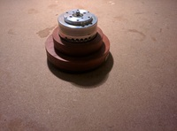

VolCon

This project began as an experiment when I inexplicably decided to learn how an optical rotary encoder worked (FYI, 2-bit gray code).
It transformed into a learning experience around USB - specifically the HID protocol. Ultimately I ended up with a simple gadget that now sits on my desk and allows me to control the PC volume.
A salvaged optical encoder was used to detect rotation along with a reclaimed head drum from a VCR which was repurposed as a control knob. I very much like the smotth bearings combined with the heavy mass that let the drum spin forever.
Key concepts for the project were:
- The optical encoder parts (sensors and disk) were salvaged from an old track-ball.
- The "knob" was made from the head drum of a VCR (remember those?). This is the part that spins and is used to adjust volume on my PC.
- The optical disk was fixed to the shaft and optical sensors mounted off some strip-board and attached to the base of the drum.
- This assembly is mounted to a custom PCB with some nylon stand-offs. The PCB became the base of the whole unit.
- I cut some wooden rings to enclose the electronics and the base of the VCR drum.
- The custom PCB was designed in eagle and etched at home from some single-sided copper-clad board. The circuit was designed around an AVR at90usb162.
- The code is written in C and implements the LUFA library developed by Dean Cameron.
- The whole unit plugs into a PC via USB and is automatically identified as a HID - no drivers required (tested in Debian Linux and Windows).
- It's a very simple device - rotate clockwise to increase volume, counter-clockwise to decrease.
- Code and PCB design are available via gitlab (link). Here are some reference links:
Gallery
{kind=link}
{kind=link}
{kind=link}
{kind=link}
{kind=link}